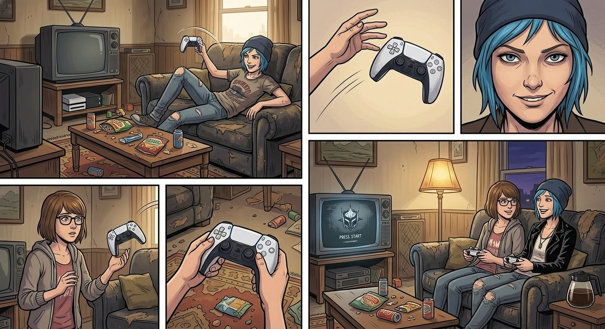

遊戲夜:遙控器

「我們來玩黑相集吧。」Chloe 窩在沙發上,把手把拋給 Max,語氣裡帶著一絲不懷好意的認真,「說不定能從遊戲設定裡找到什麼,那個模仿犯留下的馬腳。」
「這聽起來是個很爛的藉口,」Max 挑眉,「但我沒有反對的理由。」
四人約好連線——Warren、Brooke、Kenji 各自窩在自己家,透過語音一起「雲玩」,螢幕投影在 Chloe 家客廳的電視上,Chloe 負責操控手把,Max 縮在她旁邊的沙發角落。
「這遊戲的旅館格局,」Kenji 的聲音從音箱裡傳來,帶著點職業性的專注,「跟我們去過的那間,佈局邏輯有幾個地方確實很像。」
「妳們注意這扇門後面,」Brooke 補充,「案發現場那間管理室的擺設,跟遊戲裡這關幾乎一模一樣。」
四人你一言我一語地分析了將近一個小時,螢幕上的角色在虛擬旅館裡摸索前進,客廳裡的氣氛意外地認真,不像是在玩遊戲,倒像是在開一場非正式的案情分析會。
夜深了,分析告一段落,話題漸漸鬆散下來。
「我先下線,」Warren 打了個哈欠,「我媽在樓下喊我睡覺了。」
「我也差不多,」Brooke 跟著說,「明天還要交報告。」
「我這邊在跑一個東西,」Kenji 的聲音頓了頓,「先掛了,有進展再說。」
一個接一個,語音頻道陸續安靜下來,最後只剩下 Chloe 和 Max,面對著螢幕上還停在暫停畫面的遊戲角色。
「他們是不是,」Max 有點好笑地看著空掉的語音列表,「走得太整齊了?」
「管他的,」Chloe 隨手把手把扔到一邊,湊近了些,「反正人都走了。」
「妳確定妳爸媽——」
「這次真的出遠門了,」Chloe 打斷她,語氣篤定,「而且這次我學乖了,」她朝著玄關那邊努努嘴,「門鎖了。」
Max 象徵性地掙扎了一下:「我們是不是應該先——」
沒等她說完,Chloe 已經欺身湊了上去。
客廳裡只剩電視待機畫面的微光,和窗外偶爾車輛經過的聲音。兩人窩在沙發上,毯子早不知何時滑落到地上也沒人在意,吻越來越急,氣氛正好的時候——
Chloe 的手肘不小心撞到了茶几上一個造型老舊、佈滿灰塵的黑色遙控器。
「嗶——」
一聲刺耳的電子提示音,毫無預警地在安靜的客廳裡響起。
兩人瞬間僵住。
Chloe 猛地坐直身體,盯著那個遙控器,臉色一點一點沉了下來。
「這是……」她的聲音發緊,「這是我以前找監視器用的探測器。」
Max 也愣住了,一時反應不過來:「什麼探測器?」
「我爸——」Chloe 咬牙,「以前他還在瘋狂裝監視器監控我那陣子,我特地買了個訊號探測遙控器,專門用來找他藏在家裡哪些角落的攝像頭。」她抓起遙控器,對著客廳四處晃了晃,提示音又響了一聲,「這玩意這幾年一直丟在抽屜裡吃灰,現在——它又叫了。」
Max 臉色也變了:「妳是說,家裡現在還裝著——」
「我不知道!」Chloe 的火氣瞬間衝上來,「他不是說都拆了嗎?!」
「也可能是誤報,」Max 試圖冷靜下來分析,「或者是家裡別的電器訊號干擾——」
「不,」Chloe 已經氣得站起身,直接抓起手機撥了電話,「我現在就問清楚。」
電話接通,那頭是 David 剛睡醒、帶著濃濃鼻音的聲音:「……喂?這麼晚打來幹嘛。」
「老兵,」Chloe 幾乎是從牙縫裡擠出這句話,「我手上這個探測遙控器,剛才在客廳叫了。你老實說,家裡是不是還有監視器?」
電話那頭沉默了兩秒,隨即傳來一陣無奈的嘆氣聲。
「Chloe,」David 的語氣裡帶著點哭笑不得,「那些監視器我三年前就全拆了,一個不剩。妳要是不信,自己去車庫數——紙箱裡裝得整整齊齊,總共十四個,連同拆下來的線材,我都留著沒扔,妳自己去清點都行。」
「那這個為什麼會叫!」
「我怎麼知道,」David 沒好氣地反問,「可能是探測到隔壁老鄰居家的 Wi-Fi 訊號,也可能是妳那玩意本身年久失修在亂報警。我這幾年是有很多毛病,但我沒那麼不知分寸,妳都多大了。」
Chloe 還想再追問,電話那頭忽然傳來一陣窸窸窣窣的聲音,接著是 Joyce 帶著點睏倦、卻異常清醒的聲音接了過去。
「寶貝,」Joyce 的語氣溫柔得讓人起雞皮疙瘩,「妳跟 Max 在家裡想做什麼都可以,媽媽不會管,」她頓了頓,語氣裡帶著一絲藏不住的調侃,「就是記得注意安全,知道嗎?別忘了——」
「媽!」Chloe 幾乎是尖叫著打斷她,臉頰瞬間漲得通紅,「我掛了!」
她手忙腳亂地按掉電話,整個人僵在原地,一時說不出話。
Max 坐在沙發上,同樣紅著臉,剛才那股旖旎的氣氛,此刻已經蕩然無存,只剩下滿滿的社死感在客廳裡瀰漫。
「……」Chloe 把手機扔到一邊,癱回沙發,長長地哀嚎一聲,把臉埋進抱枕裡,「我現在完全沒心情了。」
「我也是。」Max 也跟著癱下去,苦笑著搖頭。
就在這時,電腦音箱忽然又響起了語音提示——Warren、Brooke、Kenji 三人的頭像幾乎是同時重新跳回線上。
「你們……怎麼又上線了?」Chloe 沒好氣地問。
「我睡不著,」Warren 的聲音聽起來心虛得很,「想到剛才分析到一半,忍不住又想繼續。」
「我也是,」Brooke 的語氣同樣飄忽,「報告寫累了,休息一下。」
「我這邊剛好跑完一個腳本,」Kenji 補了一句,聲音裡帶著一絲不太自然的刻意平靜,「進度怎麼樣了?」
客廳裡陷入一陣尷尬的沉默。Chloe 和 Max 對視一眼,誰都沒接話。
「……你們是不是,」Chloe 瞇眼,「掐著時間算好才上線的?」
「沒有沒有,」Warren 的聲音明顯提高了半個調,「純屬巧合。話說你們遊戲進度怎麼樣了?打到哪一章了?」
Chloe 和 Max 又對視一眼,雙雙心虛地移開視線。
「……繼續玩遊戲吧。」Chloe 悶聲說,重新抓起手把,把螢幕的暫停畫面點開。
Max 靠在她肩膀上,忍不住小聲笑出來,笑聲裡帶著點沒能得逞的鬱悶,又帶著點劫後餘生般的釋然。
窗外夜色正濃,客廳裡重新響起遊戲的環境音效,誰都沒再提起剛才那段被遙控器和越洋電話攪黃的插曲——至少,表面上是這樣。